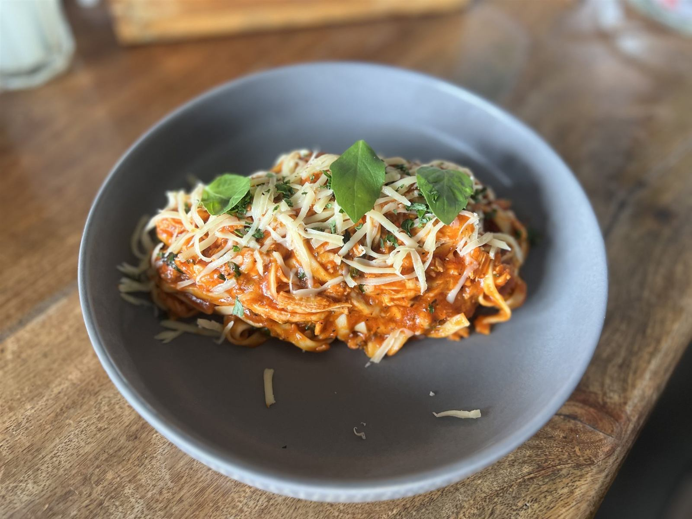

季節でかわる、ひと皿
童話caféのメニューは、季節によって少しずつ顔を変えます。パスタもデザートも、派手さより「優しい味」を大切に。古民家の時間に寄り添うひと皿を、ゆっくりお楽しみください。
※品名・価格は【確定次第掲載】です。現在表示している内容はすべてプレースホルダーです。

※写真はフリー素材のイメージです
※写真はフリー素材のイメージです
今だけの、季節のひと皿
童話caféでは、季節ごとにメニューの一部が入れ替わります。その時期だけの味わいにも、ぜひ出会ってみてください。最新のメニュー内容は、Instagramにて随時ご案内予定です。
※季節メニューの詳細・価格は【確定次第掲載】です。